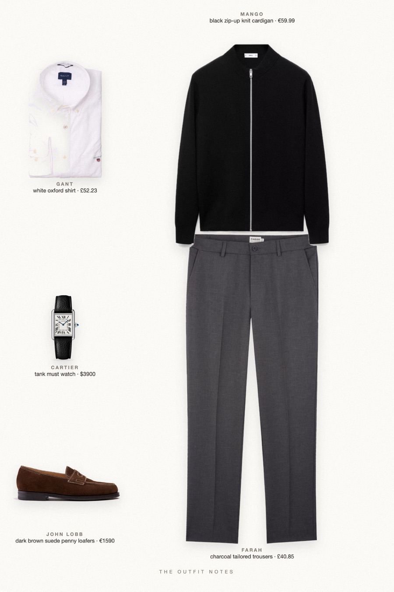

After Dark
black cardigan, white oxford

Holiday party outfit for men and New Year's Eve outfit idea: a black zip knit cardigan from Mango over a white Gant Oxford shirt, charcoal Farah trousers and dark brown John Lobb suede loafers. A Cartier Tank Must on the wrist. Sharp, minimal and party-ready without a suit.
The pieces
This page contains affiliate links: if you buy through them, we may earn a commission at no extra cost to you. Disclosure.
 Mango
Mango
Black zip-up knit cardigan
Shop GANT
GANT
White oxford shirt
Shop Farah
Farah
Charcoal tailored trousers
Shop John Lobb
John Lobb
Dark brown suede penny loafers
Shop Cartier
Cartier
Tank must watch
Shop
Prices are indicative, taken when the look was published, and may have changed. Pictures of the outfit are AI-generated illustrations of real products; the product photos are the retailers' own.
Published 2 October 2026.